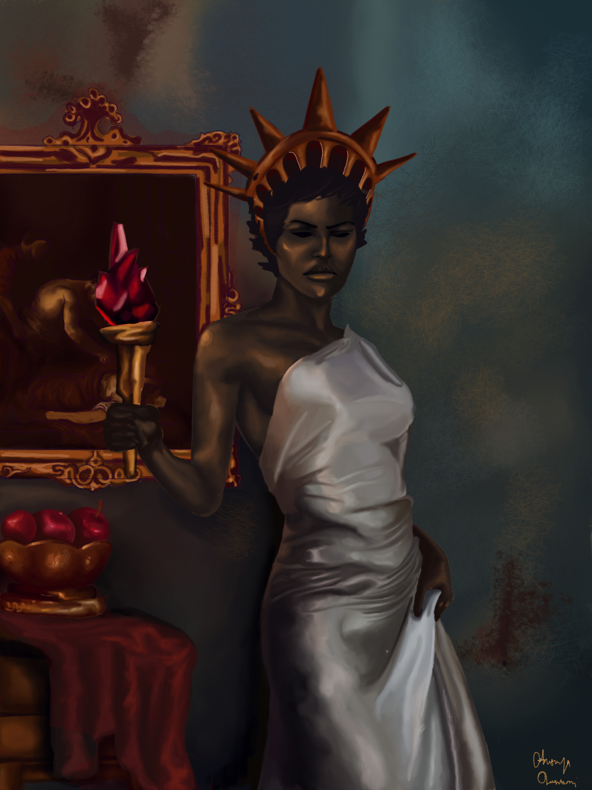
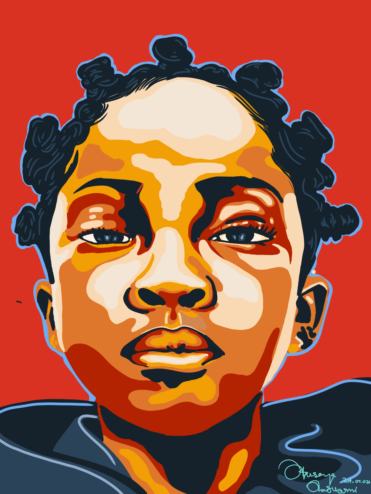
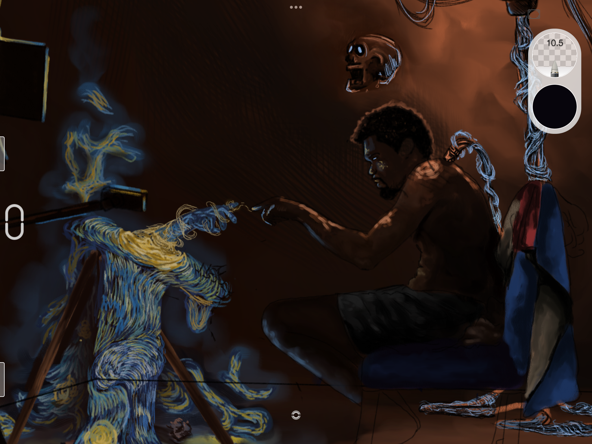
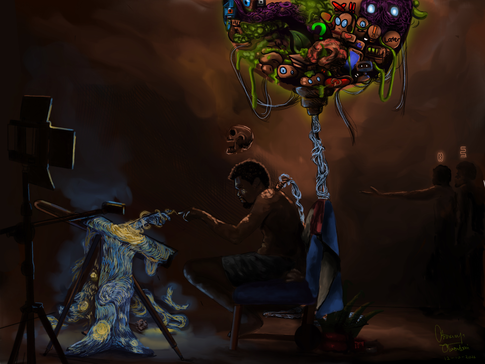

Multidisciplinary artist based in Lagos, Nigeria. Surreal psychological art exploring identity, faith, and what chooses us. Painting the gift and the curse.
VIEW WORKS ↓



I'm Walker (Otusanya Olasubomi), artist & writer. My work lives between the seen and unseen — dreams, scriptures, memory. Each canvas is a confrontation. Currently building a collection on Tezos.
Available for commissions & collaborations.